Importing Custom Notebook Images
In this section we will go over importing a custom notebook through the RHODS dashboard and test it to make sure our dependencies are included.
Import the Notebook Image
-
Before we import the image into RHODS we need to set the quay repository we just created to public. In a browser login to quay.io and go to the rhods-admin-custom-image repository. Select the Settings gear icon.
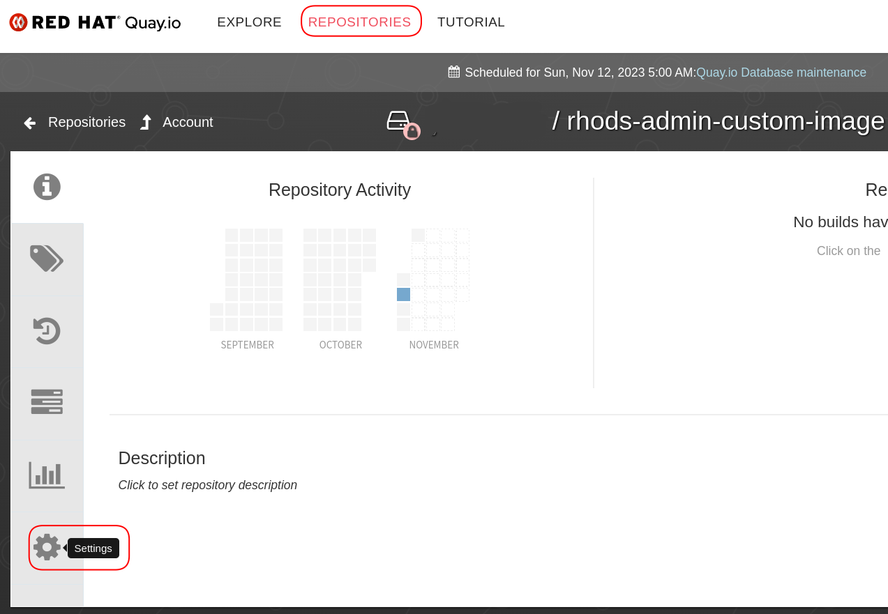 -
Scroll down until you see the Repository Visibility section. Click the Make Public button and click Ok to make the repository public.
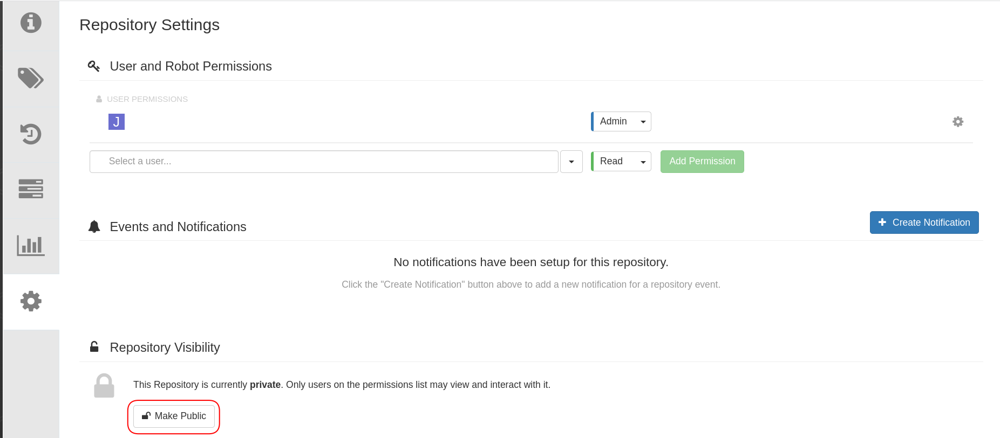 -
Login to the RHODS dashboard as the admin user. Expand Settings, click Notebook Images, and then click Import Image.
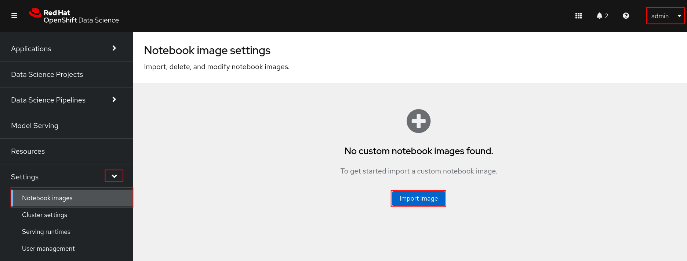 -
Enter the path to the your repository and give the image a name. Optionally add a description and package information. Click the Import button.
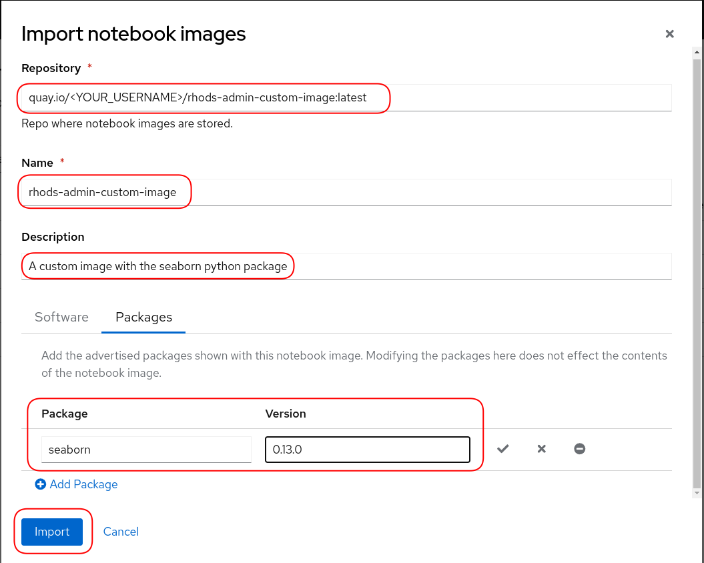You should now see the image in the list and enabled.
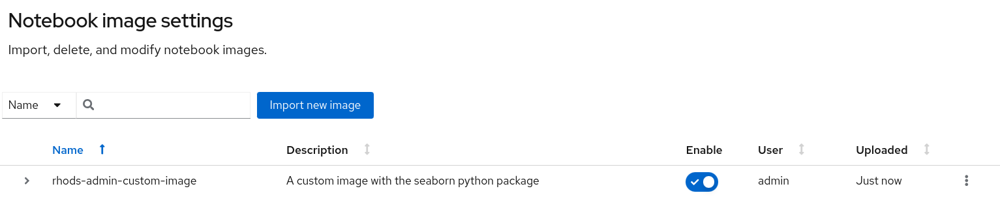
Test the Image in a Workbench
-
Now we’ll test out the image we just imported. Go to Data Science Projects and then click the Create data science project button.
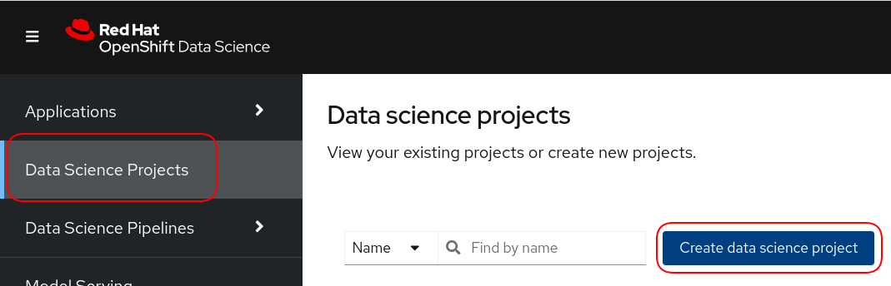 -
Give the project a name and resource name. Click the Create button.
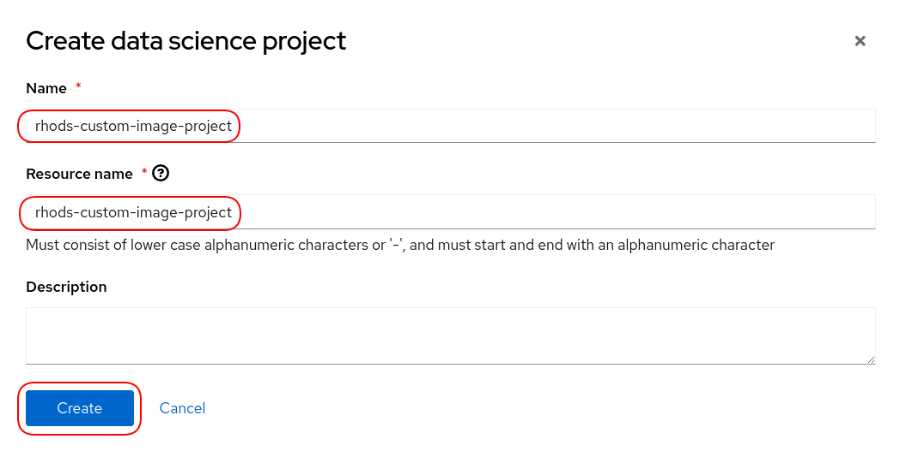 -
Click the Create button.
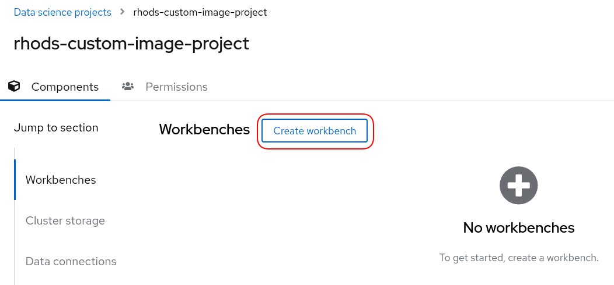 -
Give the workbench a name and select the rhods-admin-custom-image from the Image selection drop down list. Click the Create Workbench button.
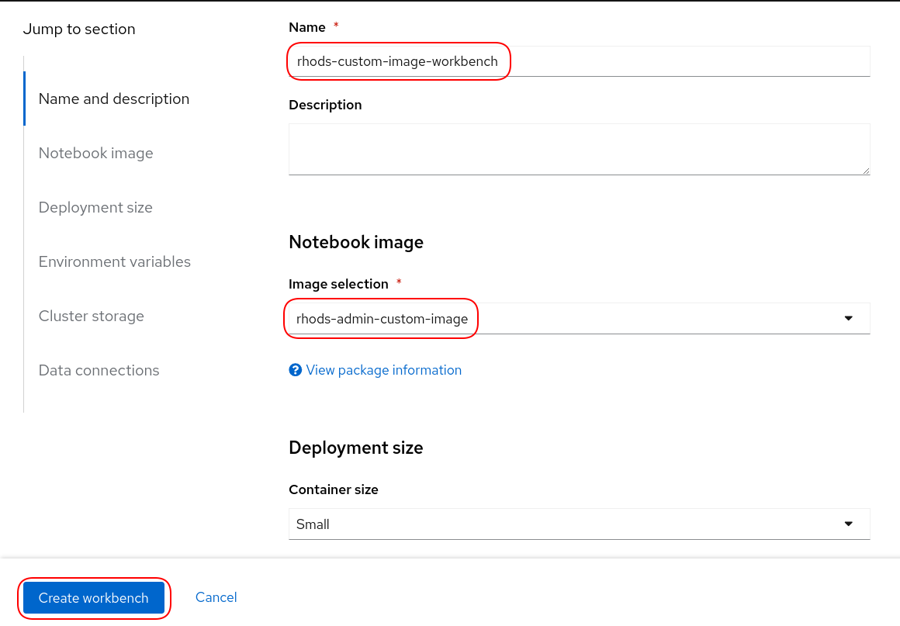 -
Once the Status changes to Running click the Open link.
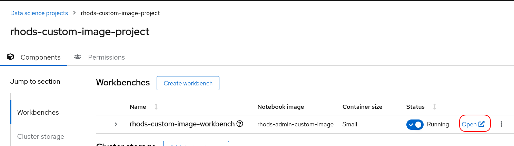 -
Login to the notebook and click the Python 3.9.16 notebook tile.
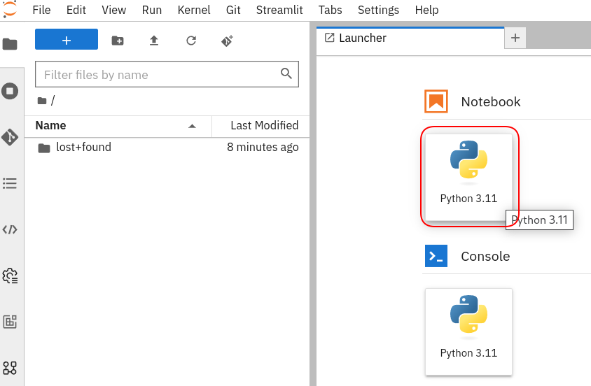 -
In the first cell of the notebook add the following
pip list | grep "^s"Press Shift + Enter on your keyboard to execute the cell. This will find all of the dependencies that start with "s". Note that seaborn is an installed dependency.
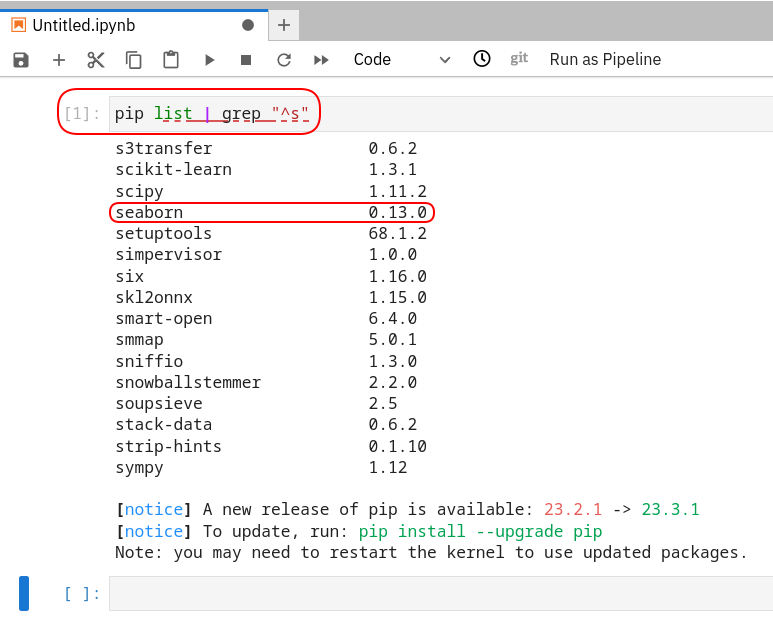 -
Now let’s test out the seaborn package to make sure it works. Copy the following code to the cell below.
import seaborn as sns import matplotlib.pyplot as plt import pandas as pd # Load the dowjones dataset dowjones = sns.load_dataset("dowjones") # Create a line plot with the year on the x-axis sns.lineplot( x="Date", y="Price", data=dowjones, ) # Set the title and labels plt.title("Dow Jones Industrial Average by Year - 1914 to 1968") plt.xlabel("Date") plt.ylabel("Price") # Show the plot plt.show()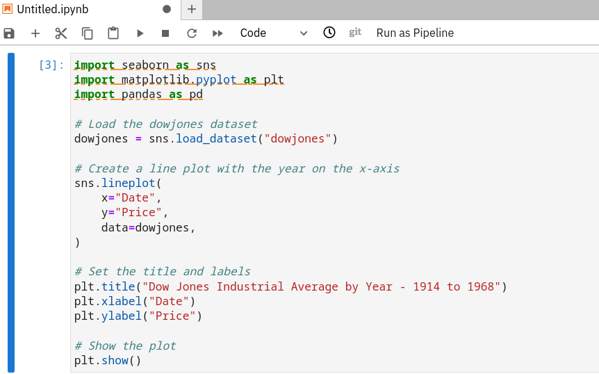Click Shift + Enter to execute the cell. You should see the graph below. You can now close the notebook. Don’t worry about saving it.
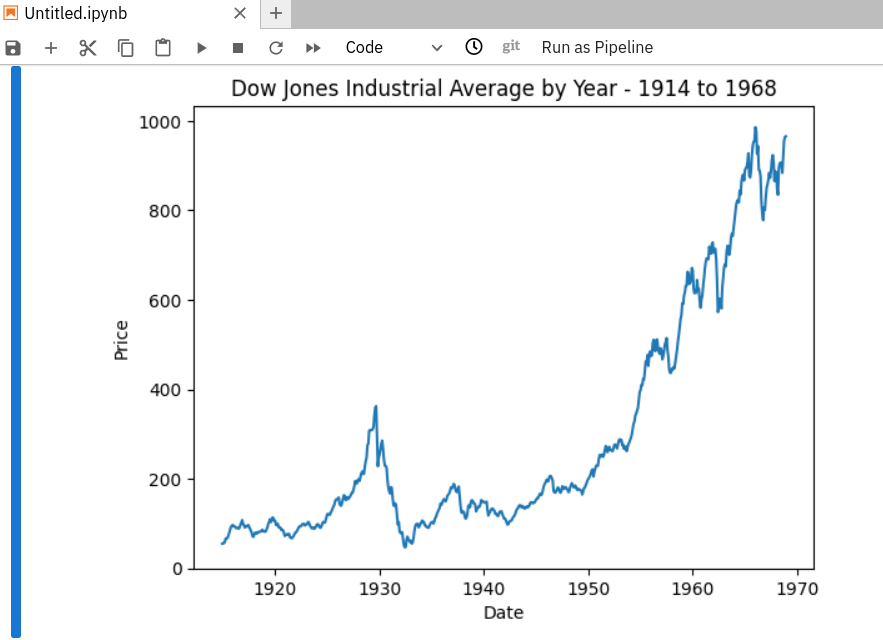
Congratulations! You’ve succesfully built, imported, and tested a custom image in RHODS.